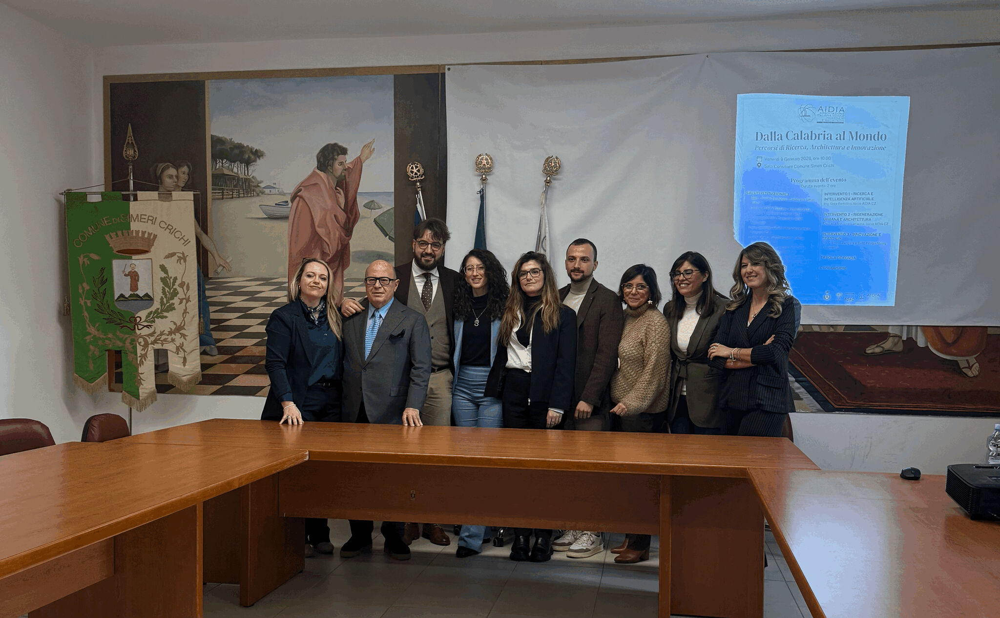

Invited speaker
Healthcare AI research and startup innovation
“Council Hall, Simeri Crichi, Calabria, Italy

I spoke at “Dalla Calabria al Mondo”, an event celebrating young talents from Calabria, the region in southern Italy where I come from.
In my talk on research and artificial intelligence, I shared my path from the University of Calabria to the University of Cambridge, and what it means to do AI research in healthcare: bridging rigorous science with real clinical needs, and communicating these ideas to both expert and non-expert audiences. I also briefly introduced Visionary.AI, the startup we are building, and the impact we hope to create, starting from Calabria, through technology, research and collaboration with local stakeholders.